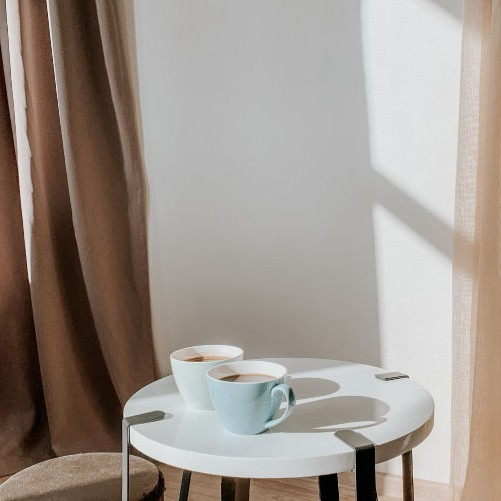
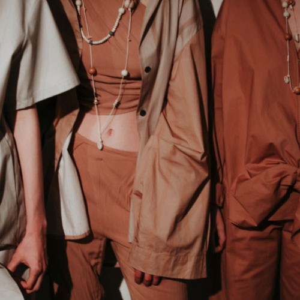

생기를 더한 모카무스

따뜻한 단색 팔레트 속 모카 무스

자연적인 색조 팔레트에 속한 모카 무스
팬톤은 매년 전 세계적인 시대정신을 포착하는 색상을 선정하며, '올해의 색'은 전 세계적인 분위기와 태도를 표현하고, 집단적인 열망을 하나의 독특한 색조로 반영합니다.
2025년을 위해 팬톤 컬러 연구소는 따뜻하고 풍부한 느낌을 지닌 갈색 계열의 색상인 'PANTONE 17-1230 Mocha Mousse(모카 무스)'를 선정했습니다. 이 색은 초콜릿과 커피의 맛있는 특성을 연상시키며, 우리가 바라는 위안의 감정을 채워줍니다.
2025 팬톤 컬러를 어떻게 사용할까?
생기를 더한 모카무스
따뜻한 단색 팔레트 속 모카 무스
자연적인 색조 팔레트에 속한 모카 무스
"2025년 팬톤 올해의 색상은 고유의 풍부함과 감각적이며 편안한 따뜻함을 지닌 부드러운 브라운 색조다.
이 색은 우리가 바라는 위로와, 타인과 함께 나누고 선물할 수 있는 소박한 즐거움의 기쁨까지 확장할 수 있다."